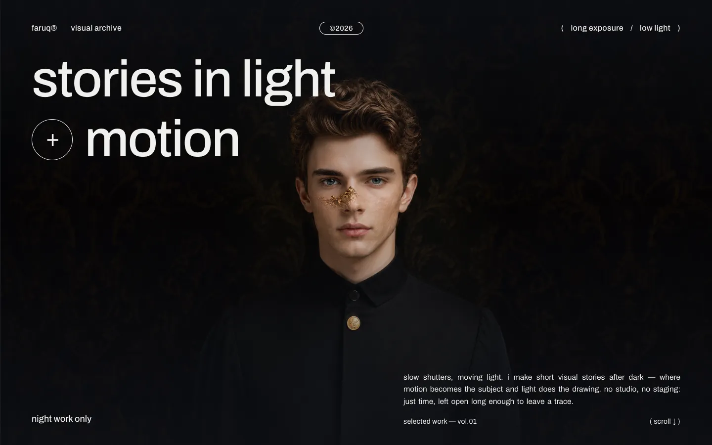

AI SaaS 产品落地页
Plety
流光丝带背景视频、滚动渐入、无缝 logo 跑马灯，两块可以点着玩的产品界面：输入框能打字，录音卡片能播放，播放时波形和转写文字逐步点亮。
- 结构
- 导航 · 首屏 · AI 对话 · AI 转写 · FAQ · 行动号召 + 页脚
- 技术
- React + Tailwind，预编译为静态文件
- 语言
- 中文 / English，一键切换
三个不同类型的单页网站：AI SaaS 产品页、摄影师个人作品集、旅行社服务页。都能直接点开浏览，交互和动效是真实可用的，不是截图；桌面和手机都适配，中英双语一键切换。
AI SaaS 产品落地页
流光丝带背景视频、滚动渐入、无缝 logo 跑马灯，两块可以点着玩的产品界面：输入框能打字，录音卡片能播放，播放时波形和转写文字逐步点亮。

摄影师个人作品集
鼠标就是手电筒：光斑滑过人像，照到的地方露出金色面具和暗纹墙纸。往下的作品索引延续这个隐喻，光跟着鼠标走，经过的那一行被点亮。

旅行社 · 本地服务业
首屏是镜头穿过舷窗的视频。往下所有照片都框在舷窗形状里；结尾的晚霞随滚动从一扇舷窗慢慢放大到整屏，和首屏首尾呼应。